Lokasi dan Wilayah
Desa Purwosari Baru berada di sebelah timur dari pusat Kecamatan Tamban, dengan jarak sekitar 2 km dari pusat kecamatan dan sekitar 60 km dari ibu kota Kabupaten Barito Kuala. Wilayah desa memiliki luas sekitar 850 ha, dengan lahan produktif sebesar 1.280 hektar yang terdiri atas sawah, perkebunan, dan permukiman.
Kondisi Alam dan Iklim
Desa ini memiliki topografi desa dataran rendah dengan ketinggian 1–3 meter di atas permukaan laut. Jenis tanahnya didominasi oleh tanah gambut dengan tingkat keasaman tinggi, yang cocok untuk pertanian pasang surut. Curah hujan rata-rata tahunan mencapai 2.665 mm, menjadikan desa ini termasuk dalam klim hujan tipe B, dengan suhu rata-rata 25–27°C.
Demografi dan Masyarakat
Perempuan
Jumlah Keseluruhan
Jumlah Kepala Keluarga
Laki-laki
Desa ini dihuni oleh keturunan masyarakat transmigrasi Jawa yang datang sejak masa kolonial, yang telah menyatu secara sosial dan budaya dengan masyarakat lokal (Banjar). Interaksi ini melahirkan bentuk kehidupan sosial yang harmonis dan akulturatif, di mana nilai-nilai budaya Jawa dan Banjar berpadu secara alamiah.
Fasilitas Umum Desa
Jenjang Pendidikan
- Taman Kanak-Kanak dan PAUD: TK Budi Luhur dan TK Mawar Putih 1 PAUD Gemilang
- Madrasah Ibtidaiyah Negeri dan Swasta: MDA Al-Mursyidul Ummah, MIS Hidayatussibyan, dan MDA Al-Huda
- Sekolah Dasar: SD Negeri Purwosari Baru 1 dan SD Negeri Purwosari Baru 2
- Sekolah Menengah Pertama/ MTSs: SLTPN 2 Tamban dan SLTPN 5 Tamban
- Sekolah Menengah Kejuruan: SMK Negeri 3 Marabahan
Fasilitas Keagamaan
- Mushalla: Miftahul Jannah, Nurul Hikmah, Jannatul Firdaus, Darul Falah, Nurul Hikmah, At Tarbiyah, dan Nurul Islam
- Masjid: Baitur Rahman, Al-Muhajirin, dan Al-Amin
Layanan Kesehatan
- Posyandu: Mawar Putih
Galeri Potensi Desa
 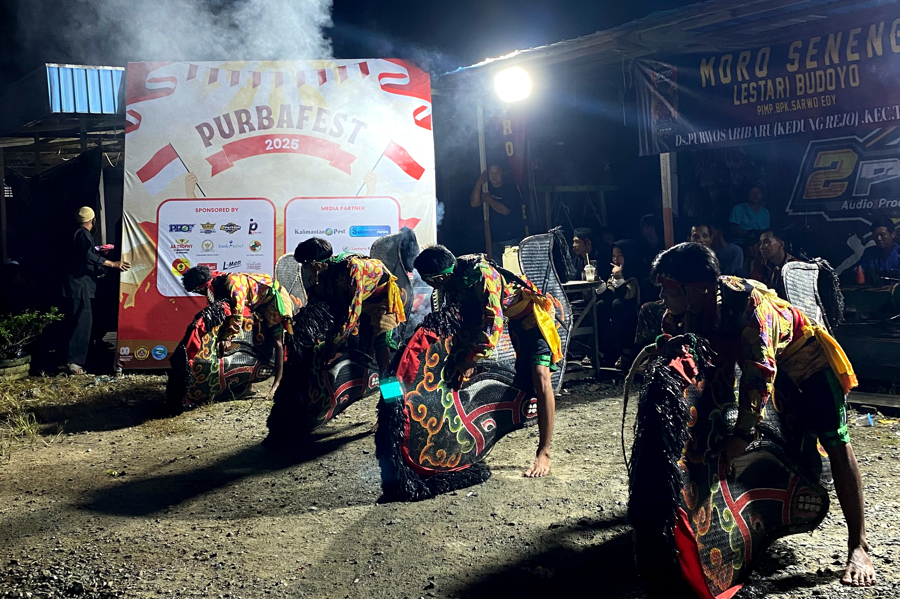
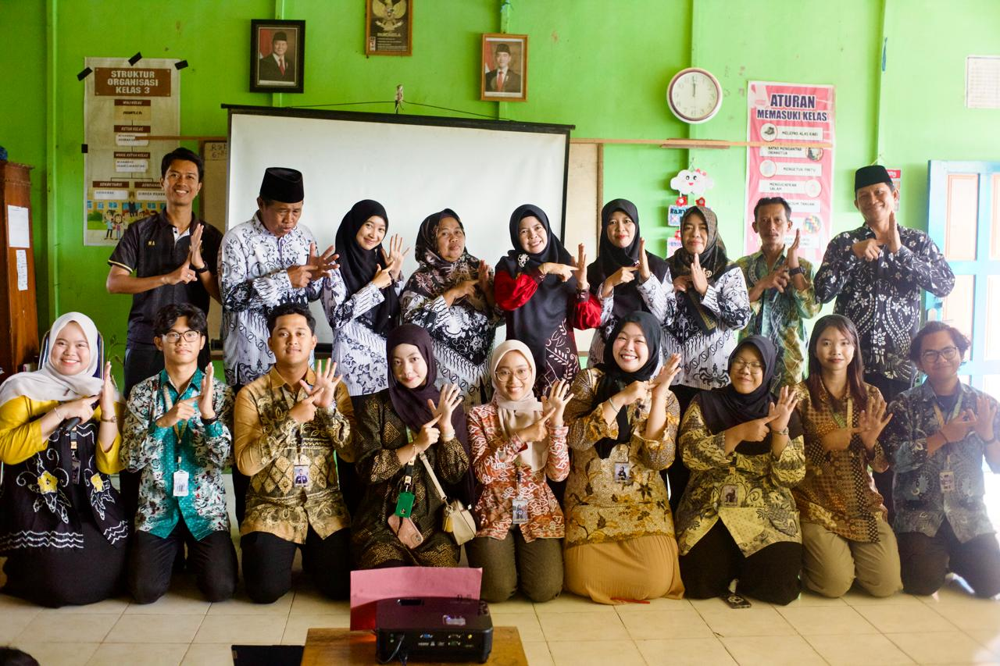
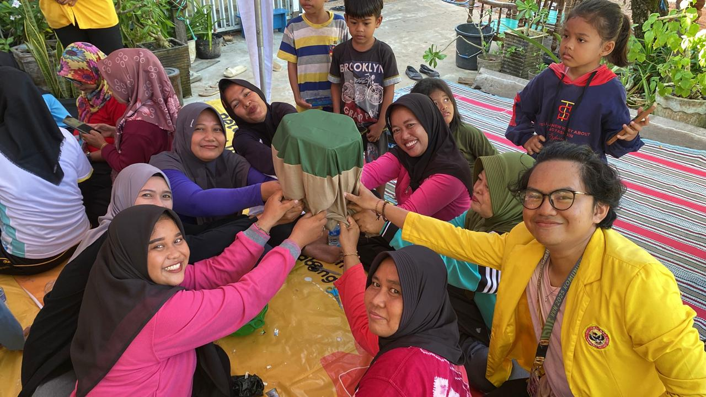
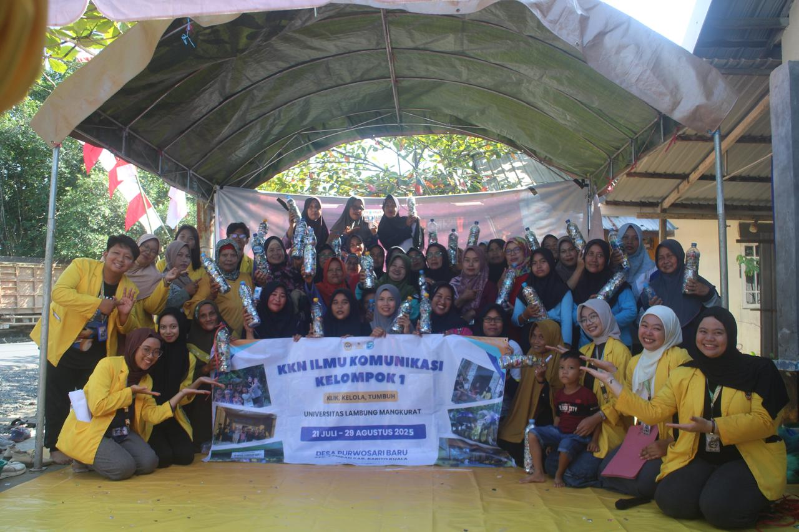
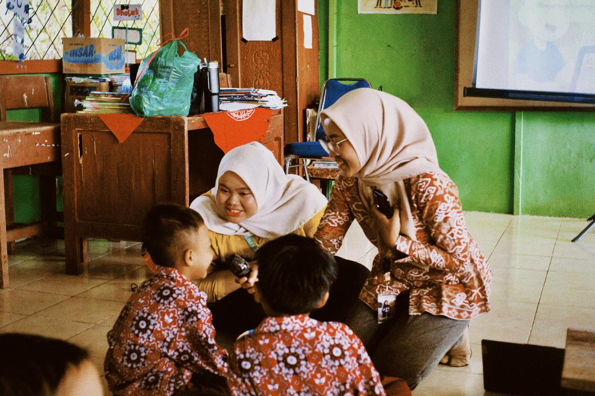
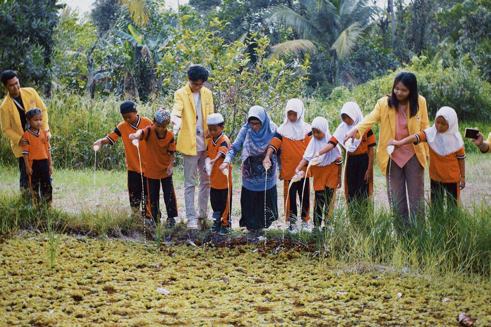
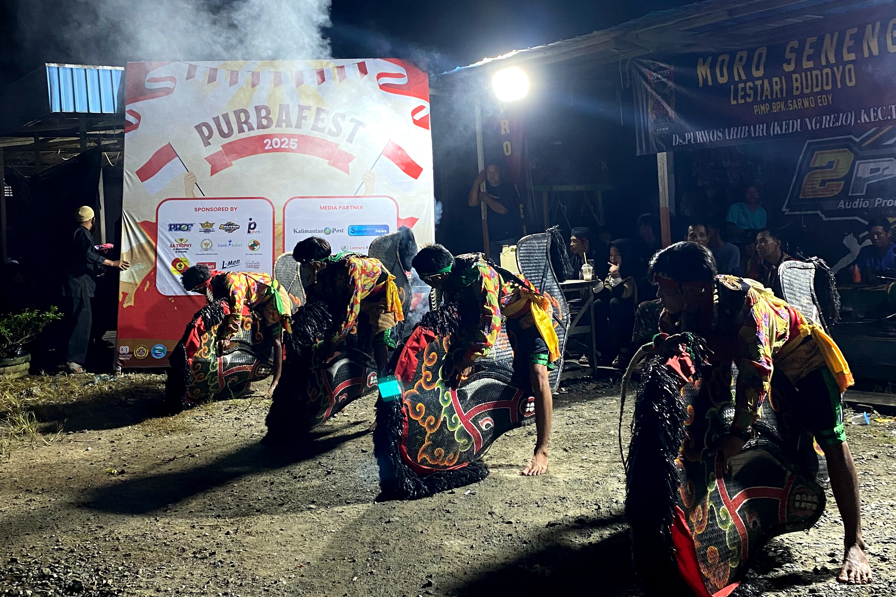
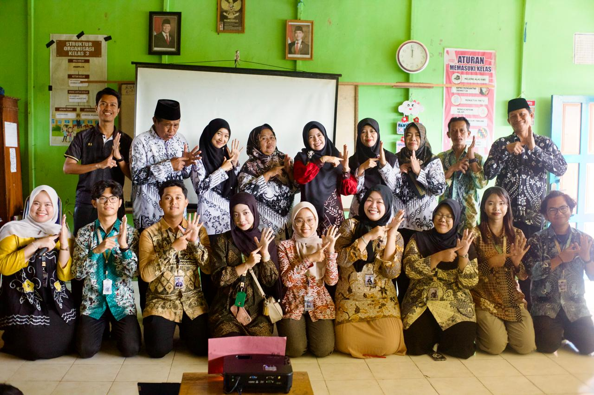
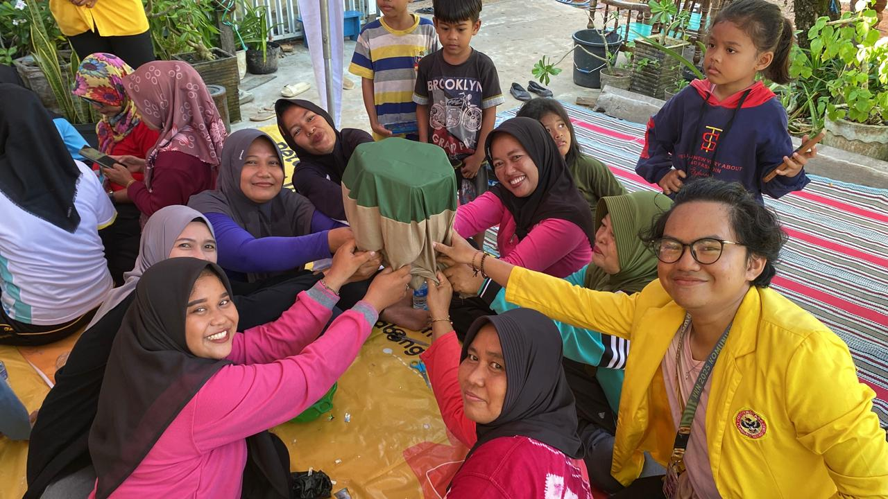
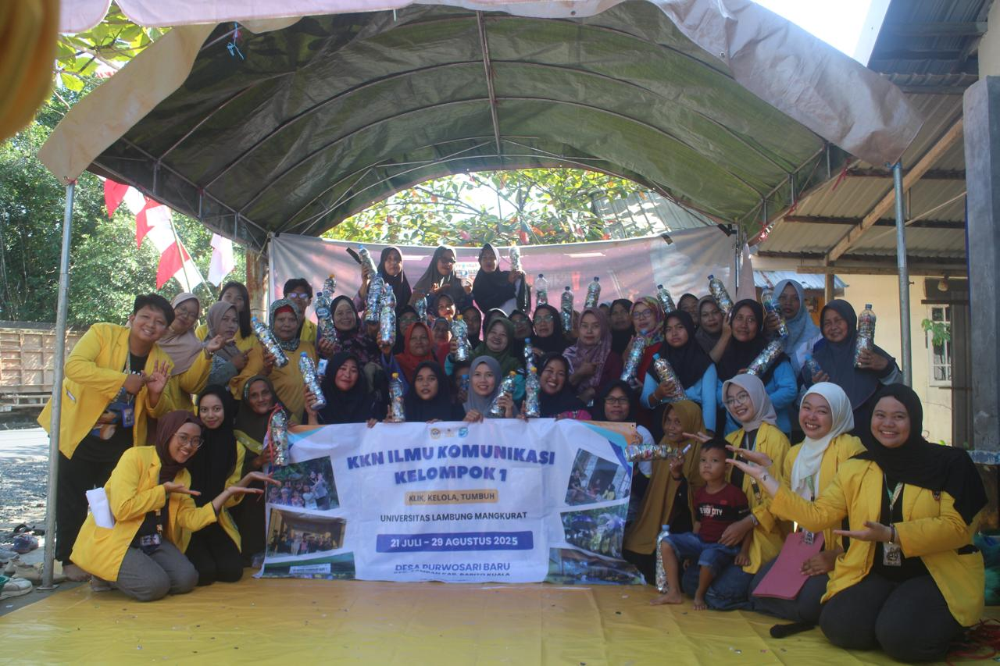
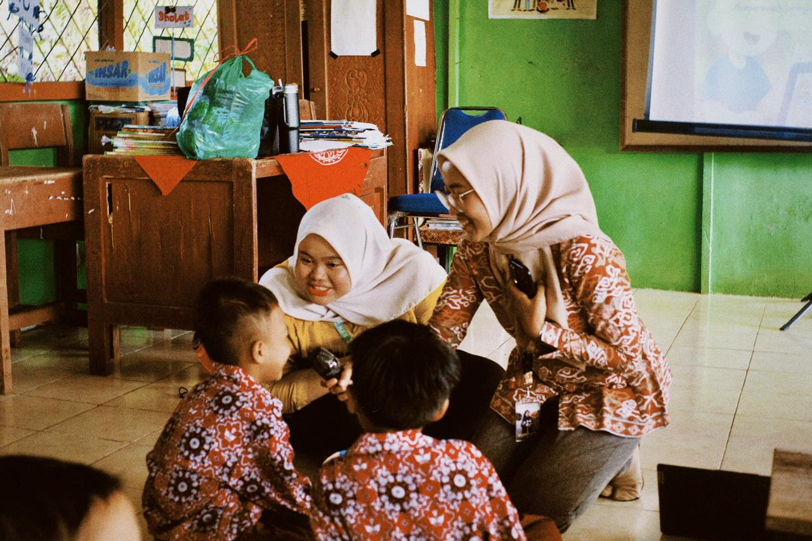
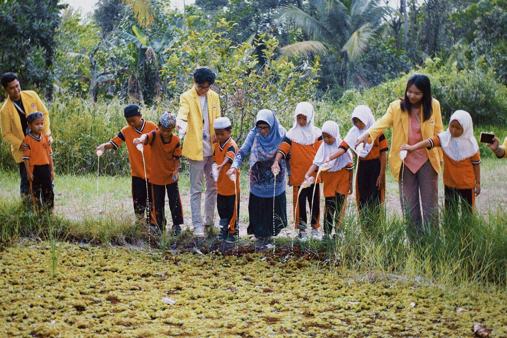